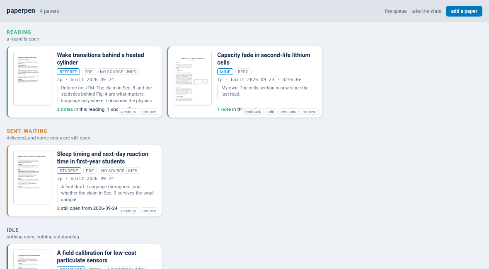

Read a paper with a pen, and get the marks back
paperpen puts a paper on a tablet, takes pen marks on it, and
returns each one anchored to the line of LaTeX that made the sentence, or as a
PDF with the notes in the margin, for whoever wrote the paper.
It exists because the round trip is where the work is lost. A draft is read
away from the desk, the marks are made on glass, and then somebody sits down
and retypes them into the source from memory. paperpen keeps the anchor: a note
made on a sentence comes back as sec_results.tex:41 and the
sentence it sat on, so the note can be acted on rather than reconstructed.

The shelf groups papers by who is waiting on whom: a reading in
progress, a round sent and unanswered, and the ones with nothing
outstanding.
The loop
- Add a paper. A LaTeX repository, a folder, or a PDF somebody sent
you.
- Read it in a browser, on a tablet, with a stylus. Notes are typed
or handwritten, and both are kept.
- Finish the round. The notes are delivered the way that paper is
delivered: committed into its repository, written to a folder, or turned into
a marked-up PDF to send.
- Act on them in the source, and mark each note done or rejected
with what was decided. paperpen starts an agent in the paper's checkout to
do it, or you run a session there by hand (see
After Finish and send). The
next reading shows what happened to the last one.
Starting it
Python 3.10 or newer, and latexmk for a paper with LaTeX
behind it. With uv:
git clone https://github.com/acorbe/paperpen.git
cd paperpen
uv run paperpen add ~/papers/my-manuscript # or a .pdf
uv run paperpen serve
It prints where it is, and that is the address to open:
registry ~/.config/paperpen/papers.json
cache ~/.cache/paperpen
shelf http://127.0.0.1:8770/
reader http://127.0.0.1:8770/paper/<id> · queue http://127.0.0.1:8770/queue
Without uv, a virtual environment and pip install -e . gives
the same paperpen command. Either way nothing is installed
system-wide and nothing runs as a service.
Loopback by default. The server listens on
127.0.0.1 and is reachable only from the machine it runs on.
Putting it where the tablet can see it is a deliberate second step, and it is
closed with a login unless you choose otherwise: see
the network page.
Where things are kept
| What | Where | Lifetime |
|---|
| The registry | ~/.config/paperpen/papers.json |
Configuration. Small, hand-editable, worth backing up. |
| The cache | ~/.cache/paperpen/<paper>/ |
Built PDFs, rendered pages, version builds. Delete it freely; it is
made again. |
| The rounds | ~/.local/share/paperpen/<paper>/ |
What was read and said, and where it went. This cannot be made
again. |
| The paper | its own repository |
Output, not state: a delivered round is committed there as
review/<date>/. |
paperpen where prints the four, which is the quickest way to
find out what a machine is actually using. Each takes an environment override
(PAPERPEN_HOME, PAPERPEN_CACHE,
PAPERPEN_DATA), and a .paperpen/papers.json in the
current directory wins over all of them, so a folder of drafts can carry its
own shelf and be moved whole.